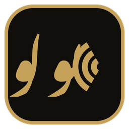
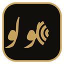

Windows dictation
Bolo — بولو, speak
Speak anywhere in Windows. The text lands at your cursor.
Listening, then transcribing, then inserted at the cursor.
Product
Dictation that stays out of the way
Bolo.com lives in the system tray. Hold a key in whatever app has the caret, speak, and let go.
-
Instant push-to-talk
Ctrl+Win is the default. The microphone stays open, so the pill says Listening as the key goes down.
-
Any language to English
Urdu, Roman Urdu, mixed speech, and other languages come back in English. Or keep the language you spoke.
-
Cleanup, or verbatim
Cleanup punctuates and applies spoken corrections without adding words. Verbatim pastes every word, including um and uh.
-
Every app
The transcript is pasted at the caret. If the field cannot take a paste, Bolo.com types it.
-
Offline fallback
If Groq is rate limiting or unreachable, whisper.cpp on this PC transcribes the take and the next one tries Groq again.
-
Personal dictionary
Names and spellings you care about are prompted exactly, and capitalized names from your dictation are remembered.
-
Paste the last take
Ctrl+Win+V inserts the previous transcript again. Change that chord in Settings.
-
Long dictation
A long take is cut on pauses and transcribed while you are still speaking. There is no length cap.
How it works
Three beats, then the caret moves on
-
01
Hold Ctrl+Win
Listening is on screen immediately. The stream was already warm, with about a second of pre-roll, so the first words are not clipped.
-
02
Speak, then release
English, Urdu, Roman Urdu, or a mix. A short tap can wait for a second press. A normal hold stops the moment you let go.
-
03
Read it where you were typing
The words land at the cursor. Output is English unless you chose Same as spoken. Paste that take again with Ctrl+Win+V.
Privacy
Your audio does not sit on a Bolo.com server
Bolo.com has no account and no telemetry. The only network path for a take is Groq, using the key on this PC.
-
Groq, and nowhere else
Audio and the transcript go to Groq. No other provider is used. If Groq cannot take the request, the same audio stays on this PC.
-
History is a local file
The last 50 transcripts can stay on this PC. Turn that off, or clear them. A take’s audio is kept only until the paste is confirmed.
-
No telemetry
There is no analytics call home. The diagnostic log records durations and errors, not the API key and not the transcript.
-
The key stays in Windows
A Groq key you add is a local credential in Windows Credential Manager. It is not written into settings.json, and it is not shown in the log. The built-in key is not displayed.
FAQ
Before you install
SmartScreen says Windows protected your PC
The installer is unsigned. SmartScreen will say it prevented an unrecognized app from starting. Choose More info, then Run anyway. That warning is expected until the binary is signed.
Do I need a Groq API key?
No. Bolo.com can dictate with its built-in Groq key. Add your own at console.groq.com/keys if you want requests on your account. Your key is stored in Windows Credential Manager on this PC. It is not written into the settings file and it is not logged.
Is there a free tier?
Bolo.com does not charge a subscription and does not run a server of its own. The built-in key follows Groq's limits for that key. If those limits are hit, add your own Groq API key in Settings.
What does the PC need?
Windows 10 or 11, 64-bit. Windows 11 already includes the WebView2 runtime. On Windows 10 the installer can fetch it. The setup is per-user and does not need an administrator account. A microphone is required. An elevated window, such as a terminal opened as Administrator, will not receive dictation.

Hold a key. Speak. Let go.
Bolo — بولو, speak. The words land at the cursor.